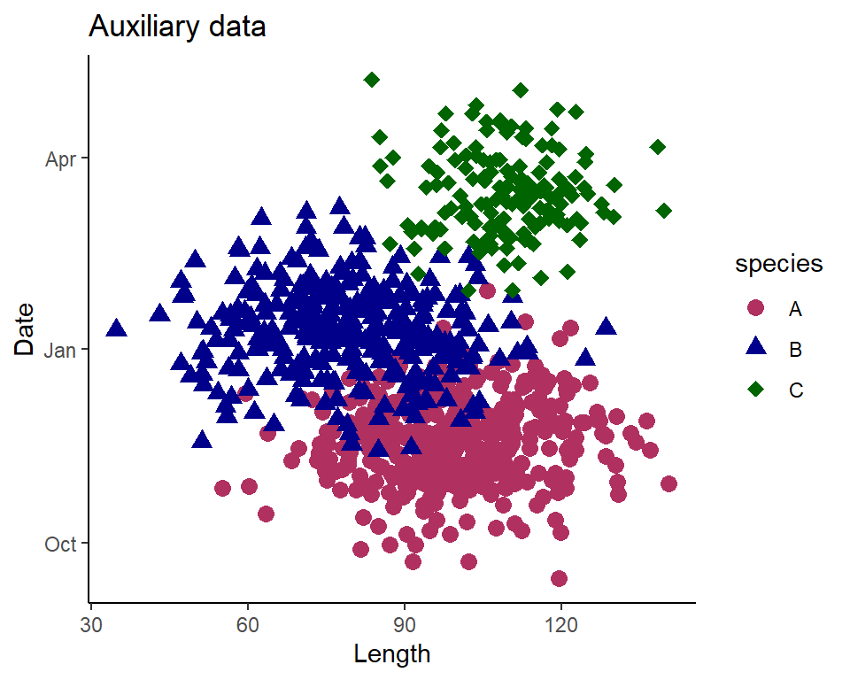
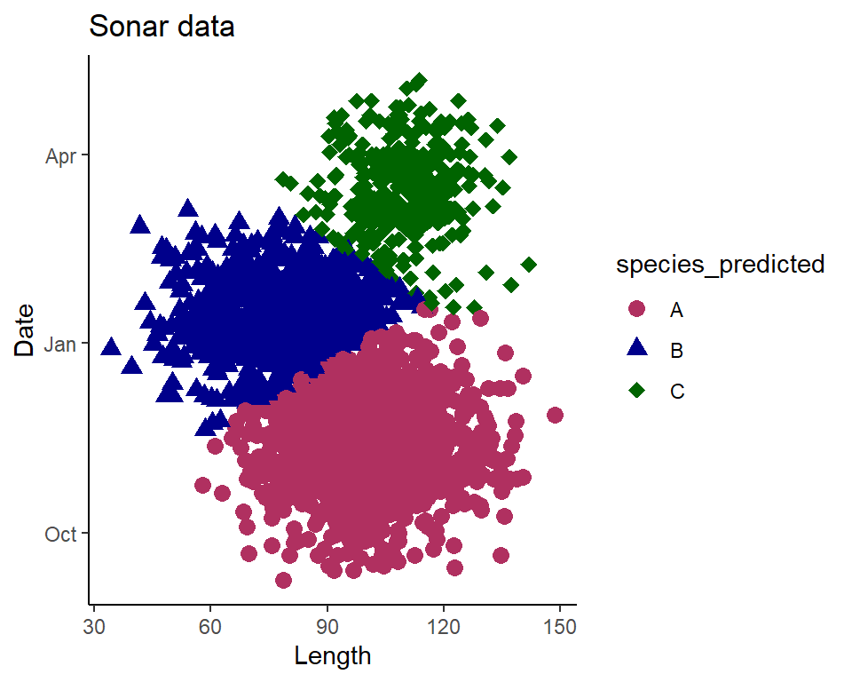

Gaussian Mixed Modelling
Gaussian Mixed model apportionment
An alternative to the logistic models is called a “Guassian Mixed Model” (GMM). The logistic regression models used previously involve assigning individuals to one species or another based on whether or not the probability exceeds a threshold. When their is a lot of overlap in distribution of lengths or dates, this species assignment method is subject to bias, especially when proportions of a given species are relatively one-sided (Fleischman and Burwen 2003). While a GMM approach may not be as easily interpretable as the logistic regressions, and rely on an assumption of normality, they can handle uncertainty better, especially when dealing with significant overlap in species length and timing distributions.
A general equation of the GMM utilized is:
\[f(x,y)=\sum_{k=1}^{K}\pi_k*N((x,y)|\mu_k,\sigma_k^2) \]
The above gives the probability density function of a dataset as a weighted sum of multiple Gaussian (normal) distributions. Each component \(k\) represents a cluster in the data,of which there are a total of \(K\), for our example we expect 3 clusters for species “A”, “B”, and “C”. \((x,y)\) are the observed data points (in our case length and date), and \(\pi_k\) is the mixing proportion for component \(k\), which all sum to 1. \(N((x,y)|\mu_k,\sigma_k^2)\) represents the Gaussian distribution for each of the \(k\)-th components with a mean of \(\mu_k\) and a variance of \(\sigma_k^2\).
For our demonstration, we can use the same auxiliary and sonar data sets that we’ve already simulated before, and see how the GMM compares to the logistic regression methods we’ve used. We’ve already seen the distributions of these data, but we can visualize the 2D distribution as well:
With the above plot we can see distinct clusters of dates and lengths, with some overlap between species.
We’ll start by loading the mclust package to utilize their Mclust() call to run a GMM on our data, and testing the model on the auxiliary data in the same way we’ve used in before. Note that in this for-loop, instead of using the predict function to set a given species ID based on a probability threshold, I’m estimating the abundance by summing the total probability for each species and using that as our abundance estimate.
set.seed(Sys.time()) #reset seed
iterations=100
results<-data.frame()
gmm_data<-select(aux_data,length,date,Flow_cfs,species)
#note here that the Mclust requires date in a numeric format
gmm_data$num_date<-as.numeric(gmm_data$date)
for(i in 1:iterations){
train_index <- createDataPartition(gmm_data$species, p = 0.7, list = FALSE)
train_data <- gmm_data[train_index, ]
test_data <- gmm_data[-train_index, ]
Ntrue_A<-sum(test_data$species=="A")
Ntrue_B<-sum(test_data$species=="B")
Ntrue_C<-sum(test_data$species=="C")
#Fit a Gaussian Mixture Model to the training data
model_iter <- Mclust(train_data[, c("length", "num_date")], G=3)
#summary(model_iter)
# Predict species for the test data based on the trained model
predictions <- predict(model_iter, test_data[, c("length", "num_date")])
test_data$species_predicted <- factor(predictions$classification,
levels = 1:3, labels = c("A","B","C"))
accuracy <- sum(test_data$species_predicted ==
test_data$species)/nrow(test_data)
#Change in abundance estimate:
#here I can sum the probability for each classification to
#estimate total abundance
#instead of using the threshold classification method
Nest_A<-sum(predictions$z[,1])
Nest_B<-sum(predictions$z[,2])
Nest_C<-sum(predictions$z[,3])
error_A <- abs(Nest_A - Ntrue_A)
error_B <- abs(Nest_B - Ntrue_B)
error_C <- abs(Nest_C - Ntrue_C)
rel_error_A <- error_A / Ntrue_A
rel_error_B <- error_B / Ntrue_B
rel_error_C <- error_C / Ntrue_C
MAPE <- mean(c(rel_error_A, rel_error_B, rel_error_C)) * 100
d<-data.frame("accuracy"=accuracy,"MAPE"=MAPE)
results<-results%>%rbind(d)
}Based on the above model training and iterative testing, we see our model predicted the species of our test data with an average accuracy of 0.886, and estimated species abundance with an average error of 9.205.
Now we can retrain our model using the entire auxiliary data set, and use it to predict species counts for our sonar_data.
model_3<-Mclust(gmm_data[, c("length", "num_date")], G=3)
#note here that the Mclust requires date in a numeric format
sonar_data$num_date<-as.numeric(sonar_data$date)
predictions <- predict(model_3, sonar_data[, c("length", "num_date")])
sonar_data$species_predicted <- factor(predictions$classification,
levels = 1:3, labels = c("A","B","C"))We can plot our predicted species to see if the clustering generally fits that of our auxiliary data.

Now, instead of using the assigned species values, we’ll use the probability each fish is a given species, which will give us a total estimate of abundance. If we look at the predictions$z we see a record for each observation that gives the probability it is one of the three classes based on the model predictions.
head(predictions$z) 1 2 3
[1,] 0.9999889 1.106059e-05 3.037456e-15
[2,] 0.8699173 1.300606e-01 2.211427e-05
[3,] 0.9484408 4.313523e-02 8.423995e-03
[4,] 0.9992204 7.795544e-04 8.353405e-10
[5,] 0.9856517 1.434752e-02 7.578460e-07
[6,] 0.9998748 1.251561e-04 3.517768e-08We can take the sum of each column to estimate the abundance of each species here:
Nest_A<-round(sum(predictions$z[,1]))
Nest_B<-round(sum(predictions$z[,2]))
Nest_C<-round(sum(predictions$z[,3]))Our estimates of abundance in this example are 1082 for species A, 741 for species B, and 327 for species C.
Estimating uncertainty
Again we can replicate our bootstrapping methods we used to estimate uncertainty in prior methods.
#bootstrapping boogie
iterations<-100
results<-data.frame()
for(j in 1:iterations){
d <- sonar_data[sample(nrow(sonar_data), replace = TRUE), ]
predictions <- predict(model_3, d[, c("length", "num_date")])
d$species_predicted <- factor(predictions$classification,
levels = 1:3, labels = c("A","B","C"))
N_A<-sum(predictions$z[,1])
N_B<-sum(predictions$z[,2])
N_C<-sum(predictions$z[,3])
iter<-data.frame('iteration'=j,"A"=N_A[1],"B"=N_B[1],"C"=N_C[1])
results<-results%>%rbind(iter)
}
#iteration total estimates
iter_totals<-results%>%
group_by(iteration)%>%
dplyr::summarise(A=sum(A),
B=sum(B),
C=sum(C))
#bounds
A_stats <- quantile(iter_totals$A, probs = c(0.025, 0.975))
B_stats <- quantile(iter_totals$B, probs = c(0.025, 0.975))
C_stats <- quantile(iter_totals$C, probs = c(0.025, 0.975))The above results show that our estimate of total abundance of species A in our sonar counts is 1082 with 95% CI [1042, 1125], a count of 741 with 95% CI [702, 785] for species B, and a count of 327 with 95% CI [295, 355] for species C.
References
Fleischman, Steve J., and Debby L. Burwen. 2003. “Mixture models for the species apportionment of hydroacoustic data, with echo-envelope length as the discriminatory variable.” ICES Journal of Marine Science 60 (3): 592–98. https://doi.org/10.1016/S1054-3139(03)00041-9.